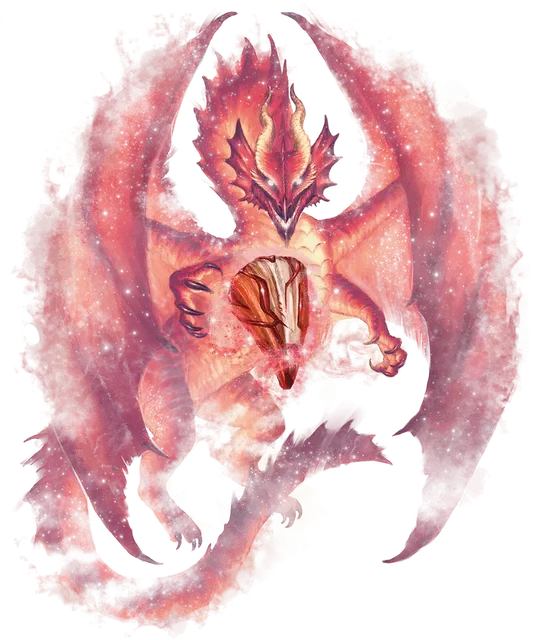

Зубы Дальвер-Нара
Teeth of Dahlver-Nar
Чудесный предмет, артефакт (требуется настройка)

Зубы Дальвер-Нара — это обрётшие форму легенды. Они представляют собой коллекцию зубов, изготовленных из различных материалов, каждый из которых имеет собственную историю происхождения. Коллекция покоится в кожаном мешочке, расшитом изображениями героев и причудливых существ. Там, где используются зубы, легенды возвращаются к жизни.
Использование зубов. Когда вы держите мешочек, вы можете действием вытащить один зуб. Бросьте кость по таблице «Зубы Дальвер-Нара», чтобы определить, какой зуб вы достаёте. Вы можете либо посеять зуб, либо имплантировать его (оба действия описаны ниже).
Если вы не посеете и не имплантируете зуб, бросьте кость в конце своего хода. При чётном результате броска зуб исчезает, и появляются существа, как будто вы посеяли зуб, но они враждебны к вам и вашим союзникам. При нечётном результате броска зуб заменяет один из ваших зубов, как если бы вы его имплантировали (потенциально заменяя другой имплантированный зуб, см. ниже).
Каждый зуб можно использовать только один раз. Отслеживайте, какие зубы уже были использованы. Если выпало число для уже использованного зуба, вы достаёте ещё не использованный зуб с более низким результатом броска в таблице.
Посев зубов. Чтобы посеять зуб, вы либо кладёте его на землю в свободное пространство в пределах вашей досягаемости, либо бросаете его в пределах 10 футов в свободное пространство в водоём размером не менее 50 футов в ширину и 50 футов в длину. После этого зуб зарывается в землю или утопает в воде и исчезает, не оставляя после себя никаких следов. Существа, описанные в колонке «Призванные существа», появляются в свободном пространстве как можно ближе к тому месту, где был посеян зуб. Эти существа являются вашими союзниками, говорят на всех языках, на которых говорите вы, и исчезают через 10 минут, если не указано иное.
Имплантация зубов. Чтобы имплантировать зуб, вы помещаете его себе в рот, после чего один из ваших собственных зубов выпадает, а имплантируемый зуб занимает его место, меняя свой размер так, чтобы поместиться у вас во рту. Как только зуб имплантируется, вы получаете эффект, указанный в столбце «Эффект имплантации». Зуб не может быть удалён, пока вы настроены на зубы, и вы не можете добровольно прекратить свою настройку на них. Зуб исчезнет, если удалить его после вашей смерти. Вы можете одновременно иметь имплантированными количество зубов не более 1 + ваш модификатор Телосложения (минимум 2 зуба). Если вы пытаетесь имплантировать больше зубов, то новый зуб заменяет один случайно выбранный из уже имеющихся зубов. Заменённый зуб исчезает, а вы теряете эффект имплантации.
Восстановление зубов. Как только все зубы исчезают, их мешочек также исчезает. Затем мешочек со всеми зубами появляется в случайном месте, которое может находиться в другом мире Материального Плана.
Разрушение зубов. Каждый зуб должен быть уничтожен индивидуально. Зуб необходимо посеять, с намерением уничтожить, в месте, где возникла его история. Когда вы сеете зуб таким образом, призванные существа не оказываются дружелюбными к вам и не исчезают. Некоторые из призванных существ просто отправляются на поиски дома, в то время как другие действуют согласно своим историям. В любом случае зуб исчезает навсегда.
Зубы Дальвер-Нара
| 1к20 | Сказка и зуб | Призванные существа | Эффект имплантации |
| 1 | Любопытные кошки Улдун-дара (моляр кошки из слоновой кости) | 9 кошек [cat] | Зуб имеет 8 зарядов. Действием вы можете потратить 1 заряд, чтобы наложить заклинание возрождение [revivify] с помощью зуба. Если вы мертвы, то в начале своего хода зуб расходует 1 заряд и накладывает на вас возрождение [revivify]. |
| 2 | Счастливый день Даггла (моляр человека) | 1 обыватель [commoner] | Когда вы заканчиваете продолжительный отдых, зуб накладывает на вас заклинание убежище [sanctuary] (Сл 18), длящееся 24 часа или до тех пор, пока вы его не нарушите. |
| 3 | Золотой век Дхакаана (золотой малый премоляр гоблина) | 10 гоблинов [goblin], 1 босс гоблинов [goblin boss] | Когда по вам попадают атакой, а в пределах 5 футов от вас находится союзник, вы можете реакцией сделать его целью атаки. Вы не можете использовать эту реакцию снова, пока не закончите короткий или продолжительный отдых. |
| 4 | Убийцы с МиллРоуд (клык полурослика) | 3 зелёных карги [green hag] на шабаше | Когда вы наносите урон цели, которая не ходила в этом бою, цель получает дополнительно 3к10 рубящего урона от призрачных клинков. |
| 5 | Проклятие Мальфегги (изумрудный клык людоящера) | 1 королева людоящеров [lizardfolk queen] и 4 людоящера [lizardfolk] | Вы получаете чешую рептилии, дающую бонус +2 к вашему КД. Кроме того, когда вы заканчиваете продолжительный отдых, вы должны преуспеть в спасброске Телосложения Сл 15, иначе получите 1 степень истощения. |
| 6 | Секрет помощника конюха (сладковатый клык человека) | 2 инкуба [incubi] | Когда вы совершаете проверку Харизмы против гуманоида, вы можете бросить к10 и добавить результат к проверке характеристики. Это существо становится враждебным к вам на следующем рассвете. |
| 7 | Мечта осла (радужный моляр осла) | 1 единорог [unicorn] | Зуб имеет 3 заряда. Действием вы можете потратить 1 заряд, чтобы прикоснуться к существу. Цель восстанавливает 2к8 + 2 хитов, а все болезни и яды, влияющие на нее, удаляются. Когда вы совершаете это действие, из вашего лба до конца вашего хода появляется мерцающий образ рога единорога. Зуб ежедневно восстанавливает все заряды на рассвете. Вы приобретаете следующую слабость: «когда я замечаю зло в действии, я должен противостоять ему». |
| 8 | За скалой Брал (серебряный зуб свежевателя разума) | 2 свежевателя разума [mind flayer] | Вы получаете телепатию до 120 футов, как описано в «Бестиарии», и можете накладывать заклинание обнаружение мыслей [detect thoughts] по своему желанию без использования компонентов. Также вы совершаете проверки Мудрости (Восприятие и Проницательность) с помехой из-за постоянного шёпота воспоминаний и разумов вокруг вас. |
| 9 | Исчезновение полупустого брюха (сошниковый зуб Большой жабы) | 4 гигантские жабы [giant toad] | Ваш прыжок в длину может достигать 30 футов, а в высоту — 15 футов, хоть с разбегом, хоть без него. |
| 10 | Сказания о видениях и привидениях (обсидиановый моляр человека) | 1 гигантский осьминог [giant octopus], 1 маг [mage], 1 спектр [specter] | Действием вы можете наложить заклинание Эвардовы чёрные щупальца [Evard’s black tentacles] (Сл 18) при помощи зуба. Это свойство не может быть использовано вновь до следующего рассвета. |
| 11 | Тысяча смертей Джандера Санстара (пожелтевший клык вампира) | 1 вампир [vampire] | Вы можете совершать атаки укусом в качестве безоружной атаки. При попадании цель получит 1к6 колющего урона и 3к6 урона некротической энергией. Вы восстанавливаете количество хитов, равное нанесённому урону некротической энергией. Находясь на солнечном свету, вы не можете восстанавливать хиты. |
| 12 | Кошмары Каггаша (скрученный зуб бехолдера) | 1 бехолдер [beholder] | Действием вы можете наложить заклинание разящее око [eyebite] при помощи зуба. Это действие не может быть совершено вновь до следующего рассвета. Всякий раз, когда вы заканчиваете продолжительный отдых, бросьте к20. При выпадении 20 в пределах 30 футов от вас появляется аберрация, выбранная Мастером, и атакует. |
| 13 | Три моста в небо (лазуритовый клык они) | 3 они [oni] | Вы получаете скорость полёта 30 футов и можете неограниченно накладывать заклинание обнаружение магии [detect magic] при помощи клыка. Если вы настроены менее чем на 3 магических предмета, вы получаете 1 степень истощения, которая не может быть удалена, пока вы не настроитесь на три или более магических предмета. |
| 14 | Когти Драготы (сломанный полупрозрачный клык) | 1 взрослый красный драколич [adult red dracolich] | Вы можете наложить заклинание сотворение нежити [create undead] при помощи клыка. Это свойство не может быть использовано вновь до следующего рассвета. Каждый раз, когда вы сотворяете нежить с помощью клыка, в случайном месте в пределах 5 миль от вас появляется скелет [skeleton], зомби [zombie] или упырь [ghoul] и ищет живых для убийства. Гуманоид, убитый этой нежитью, восстаёт как аналогичная нежить в следующую полночь. |
| 15 | Пепел веков и Вечный огонь (нефритовый малый премоляр гуманоида) | 1 дао [dao], 1 джинн [djinni], 1 ифрит [efreeti], 1 марид [marid] | Вы можете наложить заклинание контрзаклинание [counterspell] 9-го уровня при помощи зуба. Это свойство не может быть использовано вновь до следующего рассвета. Всякий раз, когда вы заканчиваете продолжительный отдых, если вы не использовали зуб для противодействия заклинанию с момента своего последнего продолжительного отдыха, ваш максимум хитов уменьшается на 2к10. Если это уменьшит ваш максимум хитов до 0, вы умрёте. |
| 16 | Дочери Бела (зеленый стальной клык исчадия преисподней) | 1 исчадие преисподней [pit fiend] | Вы можете сотворить заклинание подчинение чудовища [dominate monster] (Сл 18) при помощи клыка. Это свойство не может быть использовано вновь до следующего рассвета. От вас сильно пахнет горящей серой. |
| 17 | Почему небо кричит (синий клык дракона) | 1 древний синий дракон [ancient blue dragon] | Вы получаете иммунитет к урону электричеством и уязвимость к урону звуком. |
| 18 | Последний Тараск (зазубренный осколок зуба тараска) | 1 тараск [tarrasque] (игнорирует вас и ваши команды; появляется на 1к4 раундов, после чего исчезает) | Вы наносите удвоенный урон объектам и сооружениям. Если вы получаете 20 или более урона за один ход, вы должны преуспеть в спасброске Мудрости Сл 18, иначе проведёте свой следующий ход в убийственной ярости. Во время этой ярости вы должны использовать своё действие, чтобы нанести безоружный удар по существу, которое нанесло вам урон, или, если вам не наносили урон, по случайному существу, которое вы можете видеть, перемещаясь в сторону своей цели так близко как вы способны, если это необходимо. |
| 19 | Зуб Инсендакса (клык красного дракона с рубиновыми прожилками) | 1 древний красный дракон [ancient red dragon] | Вы получаете иммунитет к урону огнём и действием можете выдохнуть 90-футовый конус огня. Каждое существо в этой области должно совершить спасбросок Ловкости Сл 24, получая 26к6 урона огнём при провале либо половину этого урона при успехе. После использования этой способности вы получаете 2 степени истощения. |
| 20 | Зуб Дальвер-Нара (сероватый моляр человека) | 1 священник [priest] | Действием вы можете призвать на помощь божественную силу. Опишите помощь, которую вы ждёте, а Мастер выберет природу этого вмешательства; подойдёт эффект любого заклинания жреца. Это свойство не может быть использовано вновь в течение следующих 7 дней. |